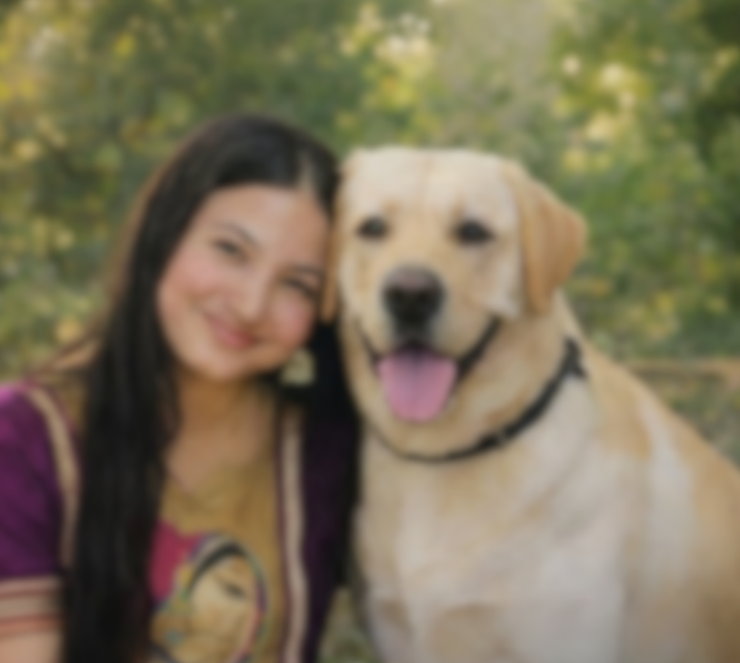
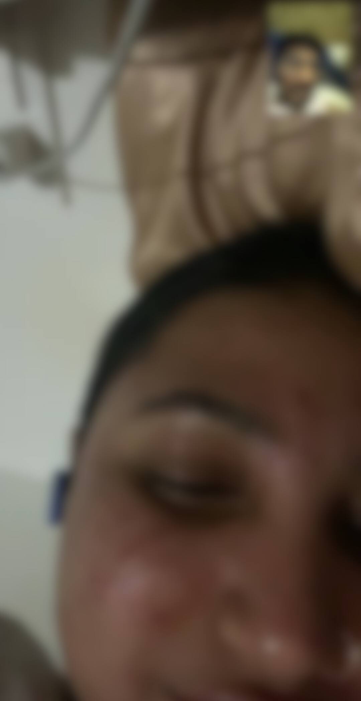
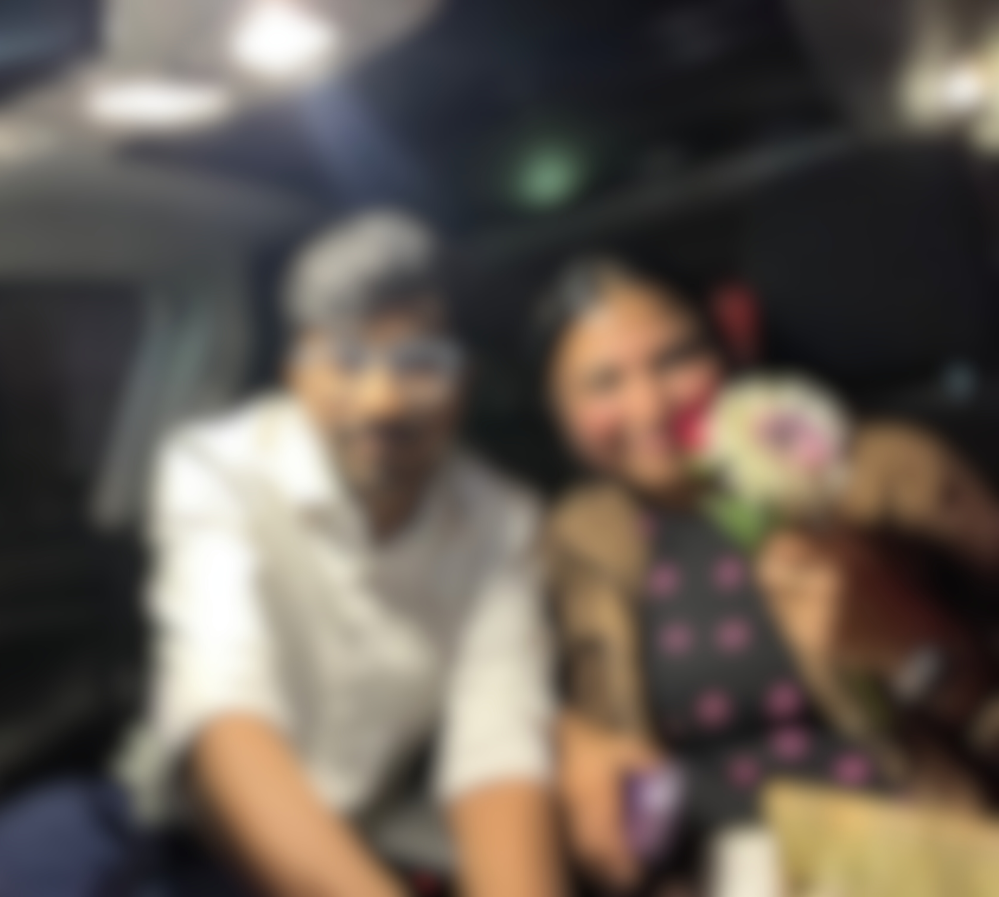

Hey Chiu..... It's ur boy, the best cook in the world, the slowest driver of all time, Akshat here 💯.....
I hope you had an awesome birthday yesterday....
Btw I checked, it was 18 january when we first matched on Hinge, actually I had told my friend partth about it that day, that I finally matched with a beautiful girl, her name is Yogeshwari.... Was such a delightful evening I still remember....
Then slowly I slid into your insta dms😅.... Was so nervous at that time, that I didn't even knew how to start a conversation with you.... But somehow I managed to....
But do u remember I made u mad on the first day itself, where I roasted you for your reels.... I felt very bad that day.... Sorry for that....

But slowly slowly I started to fall for you.... The way you talked with me, the way you shared your daily does and chaos, the way you listened to me talk n annoy you everynight on the call.... How you slept on the calls while talking and even had your headphones in your ear sometimes 😂...was all so awesome...... Still remember one day how I taught you how to make chapati 😆.....
Before You came, I had nobody in my life.... I never had such a loving girl who cared about me, so all that felt so unreal to me....
That trust, that routine of us every morning n night talking, and those afternoon patches of a short hi hello, jevlis ka n all...just amazing.... Hey, we even celebrated our own version of valentine's day.....how' ur harry doing anyways....

Btw, I won't make this a very long letter for you.... But before I end this, just wanted to let you know..... THANK YOU CHIU ❤️, THANK YOU FOR BEING THE GIRL WHO GAVE ME CHANCE TO LOVE SOMEONE FROM THE BOTTOM OF MY HEART ✨..... I LOVE YOU !!! Hope u had a wonderful time with me, if not, as always, you know that word, SORRY 🤧..... If ever we cross paths, I hope you are the happiest in your life, living your dreams of having an Animal shelter, the best cafe in the town n everything else.... I had bought a dress for you for your bday....but I don't know whether I could ever give you that....but I won't return it, I will keep it with myself as a memory of you.... See u.....